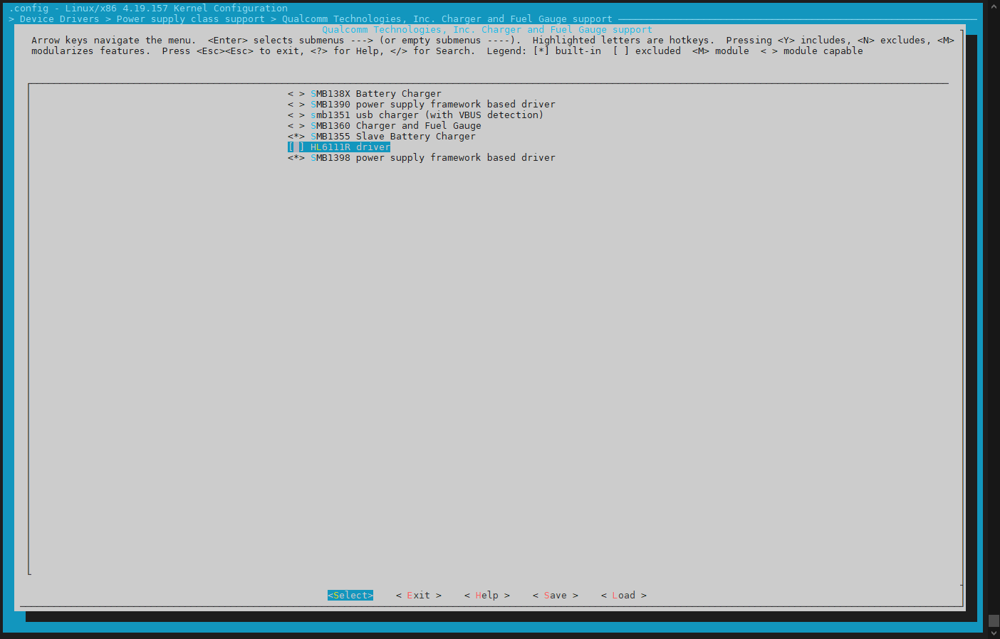

概述
高通A6650 charger mp2250架构理解。
参考
0012_移远提供外置电量计移植培训
mp2721_datasheet
prolin_mp2723_kernel4.14参考代码
硬件
I2C Slave Address: 3Fh
分析
首先查看高通原始用的charger，
make menuconfug-> Device Drivers > Power supply class support > Qualcomm Technologies, Inc. Charger and Fuel Gauge support如下，可以看到是SMB1355 Slave Battery Charger和SMB1398 power supply framework based driver:

对应Kconfig及文件如下：
Kconfig:
config SMB1355_SLAVE_CHARGER
tristate "SMB1355 Slave Battery Charger"
depends on MFD_I2C_PMIC
help
Say Y to include support for SMB1355 Battery Charger.
SMB1355 is a single phase 5A battery charger.
The driver supports charger enable/disable.
The driver reports the charger status via the power supply framework.
A charger status change triggers an IRQ via the device STAT pin.
config SMB1398_CHARGER
tristate "SMB1398 power supply framework based driver"
depends on MFD_I2C_PMIC
help
Say Y to include the support of SMB1398 Charge driver based on power
supply framework.
SMB1398 is a combo charger chip which can work in different modes:
(1) DIV2 charge pump mode to work as a companion charger to be paired
with Qualcomm Technologies, Inc.’s family of standalone chargers;
(2) DIV2 and 3-level buck combo mode to regulate the output power from
wireless charger receiver and provide the input for downstream
chargers.
config QPNP_SMB5
tristate "SMB5 Battery Charger"
depends on MFD_SPMI_PMIC
help
Say Y to enables support for the SMB5 charging peripheral.
The QPNP SMB5 charger driver supports the charger peripheral
present in the chip.
The power supply framework is used to communicate battery and
usb properties to userspace and other driver consumers such
as fuel gauge, USB, and USB-PD.
VBUS and VCONN regulators are registered for supporting OTG,
and powered Type-C cables respectively.
config QPNP_SMBLITE
tristate "SMBLITE Battery Charger"
depends on MFD_SPMI_PMIC
help
Say Y to enables support for the SMBLITE charging peripheral.
The QPNP SMBLITE charger driver supports the charger peripheral
present in the chip.
The power supply framework is used to communicate battery and
usb properties to userspace and other driver consumers such
as fuel gauge and USB.
VBUS regulator is registered for supporting OTG.
config QPNP_QG
bool "QPNP Qgauge driver"
depends on MFD_SPMI_PMIC
help
Say Y here to enable the Qualcomm Technologies, Inc. QGauge driver
which uses the periodic sampling of the battery voltage and current
to determine the battery state-of-charge (SOC) and supports other
battery management features.
Makefile:
obj-$(CONFIG_SMB1355_SLAVE_CHARGER) += smb1355-charger.o pmic-voter.o
obj-$(CONFIG_SMB1398_CHARGER) += smb1398-charger.o pmic-voter.o
obj-$(CONFIG_QPNP_QG) += qpnp-qg.o pmic-voter.o qg-util.o qg-soc.o qg-sdam.o qg-battery-profile.o qg-profile-lib.o fg-alg.o
obj-$(CONFIG_QPNP_SMB5) += step-chg-jeita.o battery.o qpnp-smb5.o smb5-lib.o pmic-voter.o storm-watch.o schgm-flash.o
obj-$(CONFIG_QPNP_SMBLITE) += step-chg-jeita.o battery.o qpnp-smblite.o smblite-lib.o pmic-voter.o storm-watch.o schgm-flashlite.o
vendor/bengal-perf_defconfig发现以下：
CONFIG_QPNP_QG
CONFIG_SMB1398_CHARGER
CONFIG_SMB1355_SLAVE_CHARGER
CONFIG_QPNP_SMBLITE
CONFIG_QPNP_SMB5
Makefile:
obj-$(CONFIG_QPNP_SMB5) += step-chg-jeita.o battery.o qpnp-smb5.o smb5-lib.o pmic-voter.o storm-watch.o schgm-flash.o
obj-$(CONFIG_QPNP_QG) += qpnp-qg.o pmic-voter.o qg-util.o qg-soc.o qg-sdam.o qg-battery-profile.o qg-profile-lib.o fg-alg.o
obj-$(CONFIG_QPNP_SMBLITE) += step-chg-jeita.o battery.o qpnp-smblite.o smblite-lib.o pmic-voter.o storm-watch.o
obj-$(CONFIG_SMB1355_SLAVE_CHARGER) += smb1355-charger.o pmic-voter.o
obj-$(CONFIG_SMB1398_CHARGER) += smb1398-charger.o pmic-voter.oschgm-flashlite.o
dts中匹配到的文件如下:
qpnp-smb5.c:未添加
wugn@jcrj-tf-compile:a6650$ ack qcom,qpnp-smb5
qpnp-smblite.c:已添加
wugn@jcrj-tf-compile:a6650$ ack qcom,qpnp-smb
pm2250.dtsi
227: pm2250_charger: qcom,qpnp-smblite {
228: compatible = "qcom,qpnp-smblite";
smb1398-charger.c:未添加
wugn@jcrj-tf-compile:a6650$ ack qcom,smb1398-charger
smb1355-charger.c：未添加
wugn@jcrj-tf-compile:a6650$ ack parallel
qpnp-qg.c:添加了qcom,qpnp-qg-lite驱动：
wugn@jcrj-tf-compile:a6650$ ack qcom,qpnp-qg
pm2250.dtsi
193: compatible = "qcom,qpnp-qg-lite";
wugn@jcrj-tf-compile:a6650$
也就是说目前qcm2290中用到如下文件：
obj-$(CONFIG_QPNP_QG) += qpnp-qg.o pmic-voter.o qg-util.o qg-soc.o qg-sdam.o qg-battery-profile.o qg-profile-lib.o fg-alg.o
obj-$(CONFIG_QPNP_SMBLITE) += step-chg-jeita.o battery.o qpnp-smblite.o smblite-lib.o pmic-voter.o storm-watch.o